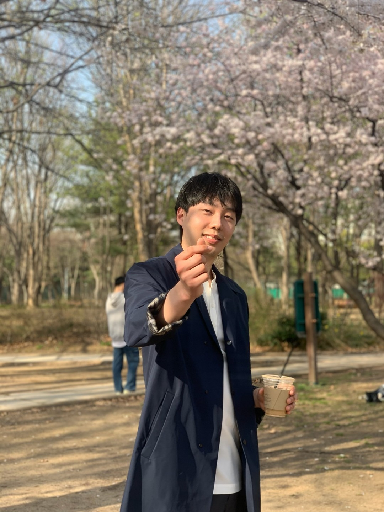
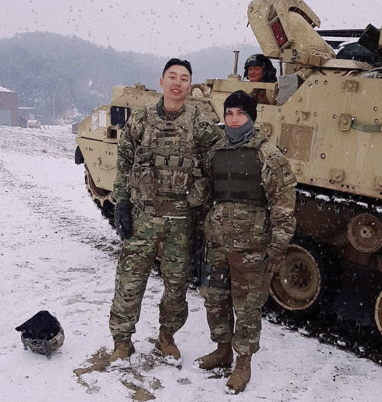

WooJin’s Website
Introduction

Hi this is WooJin, thank you for visiting my website. I am currently a 2nd year MPH student in Columbia University Mailman school of Public Health.
This is my website to introduce myself.
I will share my past experience and the work doing now in this website.
Experiences
Current Work
I am working with Dr. Saiman in the Department of pediatrics, Division of infectious diseases as a student research worker, researching in assessing risk factors that are associated with Cardiac Surgical Site Infection (SSI) in infants who undergo surgery within 1 year of life.
Academic
COLUMBIA UNIVERSITY, 2023.09 - PRESENT
Master of P.H. – Epidemiology / Certificate in Biostatistics and Public Health Data Science
I am Currently a 2nd year MPH student.

UNIVERSITY OF ILLINOIS AT URBANA-CHAMPAIGN, 2016.08 – 2023.05
Major: B.S. in Molecular Cellular
Biology
Minor: Bioengineering, Chemistry
I went to University of Illinois at Urbana-Champaign for my undergraduate.
Research
UNIVERSITY OF ILLINOIS AT URBANA-CHAMPAIGN
PIGLET NUTRITION AND
COGNITION LAB
PI: DR. RYAN
DILGER
2022.03 – 2023.05
Providing care for the neonatal pigs maintaining an optimal environment and assisting behavioral studies. Processing MRI by running processing scripts and tracing/masking out the brain, checking through data for quality assessment.
SEJONG UNIVERSITY
BIG DATA RESEARCH LAB
PI: Dr. Jong
Pil Yu
2020.04 - 2020.12
Data mining and data processing for analysis using IBM SPSS modeler.
Project-based research conducted. Analysis and prediction of what
mechanical part of ATM is expected to get prepared due to malfunction
yearly in the United States. Analysis and prediction of employees’ work
performance by their quantified personality test. Have a publication
predicting the apartment sales price in Suwon City, Gyeonggi-do.
Received Best Publication Award 2020 from the Korea Big Data Society
Professional
CJ Cheil Jedang
R&D System Technology Team Intern
2020.07-2020.08
Researched DNA Oligonucleotide synthesis. Find the difference between chemical and enzymatic DNA synthesis and how enzymatic oligonucleotide synthesis will benefit. An elementary level of enzymatic engineering was conducted for experiments and trials.
Military Service

US ARMY/ROK ARMY
Cavalry
Scout
CAMP
HOVEY
2018.09 - 2020.04
Served as a KATUSA (Korean augmentation to the US ARMY).
Finished service as a sergeant, 1st Cavalry Division, 6-9 CAV, C Troop
2nd platoon dismount Alpha team, team leader. Finished training such as
STX, Gunnery, FTX, Cold weather training, Observation Point
reconnaissance, Saber first response, etc.
to Dashboard
to Top